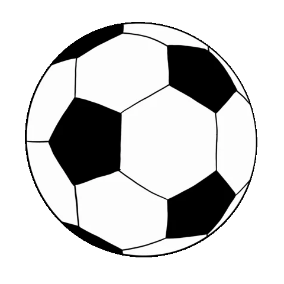

Franov prvi izbor
Nogomet 

- Nogomet je ekipni sport koji se igra između dvije momčadi s ciljem postizanja golova protivničke momčadi.
- Svaka momčad ima 11 igrača na terenu, uključujući vratara i igrače u polju.
- Igrači smiju koristiti bilo koju dio tijela osim ruku za udariti loptu (iznimka je vratar koji može koristiti ruke unutar svog kaznenog prostora).
- Sudci su odgovorni za provođenje pravila na terenu i donošenje odluka u vezi s prekršajima, golovima, kartonima i drugim situacijama na terenu.
- Sudac igraču može dodijeliti žuti ili crveni karton ukoliko prekrši neko od pravila
- Utakmica se sastoji od dvije polovice po 45 minuta, s mogućnošću dodatnog vremena (suci mogu dodati vrijeme nakon svake polovice) i eventualno izvođenje jedanaesteraca za odlučivanje u slučaju neriješenog rezultata.
- Svaka zemlja ima vlastitu ligu u kojoj se natječu samo klubovi te određene zemlje
-
Trenutačni svjetski prvak je Argentina
{kind=link}
{kind=link}
Poveznice
Bavim li se ovim sportom?
Filipov prvi izbor
Odbojka

- Odbojka je ekipni sport u kojoj se dvije ekipe po 6 igrača bore na terenu dimenzija 18x9 metara.
- Cilj igre je prebaciti loptu preko mreže u protivničko polje na način da je protivnik ne uspije održati u zraku i vratiti natrag preko mreže na dozvoljen način prije nego što padne na teren
- Ekipa smije loptu dodirnuti tri puta u jednom poenu, a isti igrač ne smije odigrati loptu dvaput uzastopce (blok se ne broji kao dodir, tako da kad igrač odigra blok, može igrati još jednom).
- Tijekom igre svih šest igrača se u polju rotiraju u smjeru kazaljke na satu, nakon osvojenog servisa.
- Utakmice se igraju na tri dobivena seta od po 25 poena, a najviše se može odigrati pet setova. Za razliku od prva četiri seta, peti (koji se još zove i tie-break) se igra do 15 poena. U slučaju izjednačenog rezultata krajem seta, pobjedniku su potrebna dva poena razlike da bi završio susret u svoju korist.
{kind=link}
Poveznice
Bavim li se ovim sportom?
{kind=link}
- Mjesto rođenja: Osijek
- Mjesto stanovanja: Osijek
- Srednja škola: II. Gimnazija Osijek
{kind=link}
- Mjesto rođenja: Slavonski Brod
- Mjesto stanovanja: Osijek
- Srednja škola: Tehnička škola Županja
- Posao: Barrage